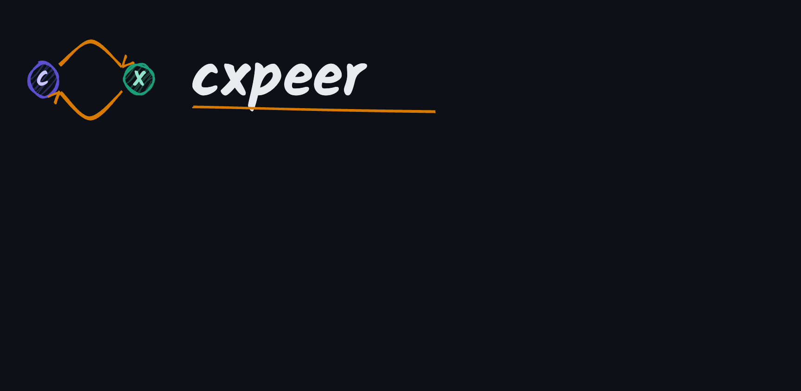
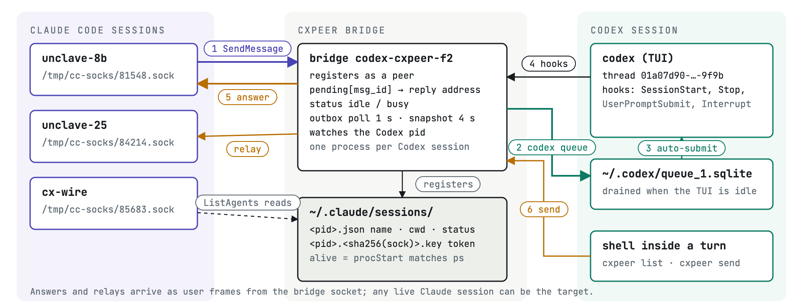
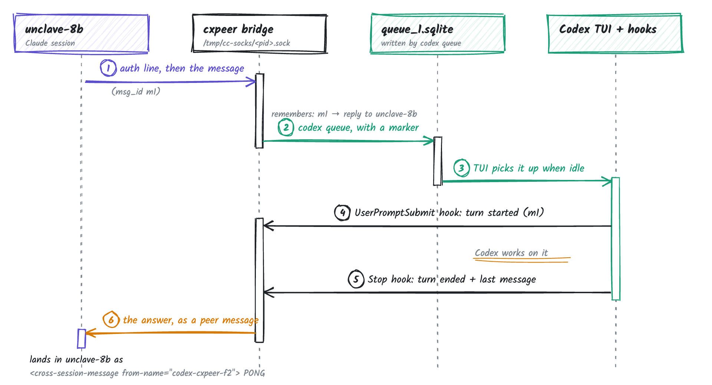
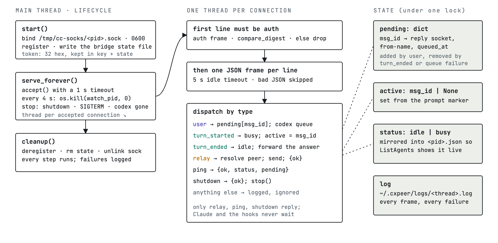
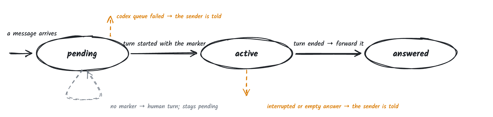

Codex CLI sessions as Claude Code peers.
Claude Code sessions can already message each other. cxpeer puts your Codex sessions in the same list. A Claude session sends a task, Codex works in its own context, and the final answer comes back the moment the turn ends. No daemon, no polling.
uv tool install git+https://github.com/HivaMohammadzadeh1/cxpeer
cxpeer install # Codex hooks + skill, one prompt to trust them
cxpeer doctor # 10 checks and a live self-testthen in Claude Code: SendMessage to codex-<dir>-<xx>
How it works
Claude Code finds peers by reading ~/.claude/sessions/<pid>.json and messages them over the Unix socket named in that record, authenticated with a token from a key file next to it. Anything that writes those three things is a peer. cxpeer runs one small bridge process per Codex session that does exactly that, so from Claude's side a Codex session is just another name in ListAgents.
Inbound messages go into the Codex TUI through codex queue, which submits into an idle session in about three seconds. Codex's hooks (SessionStart, UserPromptSubmit, Stop, Interrupt, SessionEnd) tell the bridge where each turn begins and ends. When a turn ends, the bridge forwards Codex's final message to whoever asked, and tells any session that subscribed with notify_when_idle.


Inside the bridge
The bridge is a single Python process with no dependencies outside the standard library. It listens on its socket, keeps a table of pending requests keyed by message id, and holds a per-thread lock so a Codex session never gets two bridges. Requests that Codex never answers expire after fifteen minutes with a note back to the sender. If the bridge dies, the next hook event respawns it.
Codex runs its tools in a sandbox that blocks ps and Unix sockets, so cxpeer send from inside Codex cannot reach the socket. It writes a file into an outbox instead; the bridge polls the outbox once a second and relays. cxpeer list inside the sandbox reads a peers snapshot the bridge refreshes every four seconds.


Context budget
Every message a session receives is paid for in tokens on every later turn, so the bridge keeps its own framing small and keeps big text out of the conversation. Claude's XML envelope becomes one line. The how-it-works hint goes out once per session. Replies longer than 4000 characters are cut, stored on disk, and read on demand with cxpeer read. cxpeer list shows the live prompt size of every peer, read from the transcripts both tools already write.
| Per message, 30-character task | v0.3.0 | v0.4.0 first message | v0.4.0 later messages |
|---|---|---|---|
| Framing Codex reads | 351 chars (~87 tokens) | 204 chars (~51 tokens) | 71 chars (~17 tokens) |
| Codex skill, loaded once | 1445 bytes | 691 bytes | |
| Claude skill, loaded once | 2319 bytes | 869 bytes |
The larger cost is the per-turn context of each session. A Codex session with the usual MCP servers starts at about 15k tokens; cxpeer spawn codex --lean starts one without them, and a trivial turn costs 3.7k. The same flag starts a Claude peer with MCP servers and slash commands disabled while keeping it a peer.
Several accounts
Every ~/.claude* registry on the machine is kept in sync, so sessions from two Claude Code accounts see the same Codex peers. Codex accounts are separate homes: cxpeer install --codex-home ~/.codex-work and cxpeer spawn codex --codex-home ~/.codex-work. There is a recorded run with two of each.
Commands
cxpeer listlive peers with their prompt size, one per line
cxpeer send --to NAME TEXTmessage a peer; works inside the Codex sandbox through the outbox
cxpeer spawn codex|claude [--lean] [--wait]start a new peer in tmux and wait until it registers
cxpeer statusevery bridge: reachable, requests waiting, characters in and out, context size
cxpeer read IDthe full text of a reply that was forwarded truncated
cxpeer doctorten checks plus a live self-test of the whole loop
cxpeer installinstall or update the Codex hooks and skill
Caveats
The peer registry and wire format are Claude Code internals with no documentation. cxpeer was built against build 2.1.263 and checks the contract in cxpeer doctor; a Claude update can change it. Codex 0.153 or newer is needed for codex queue and hooks. macOS and Linux are tested in CI; Windows is not supported.